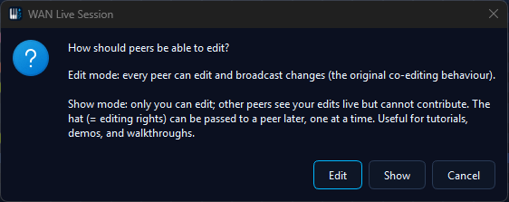
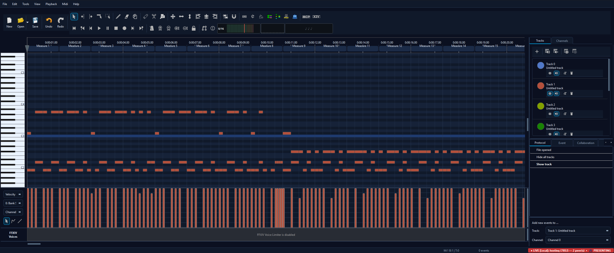
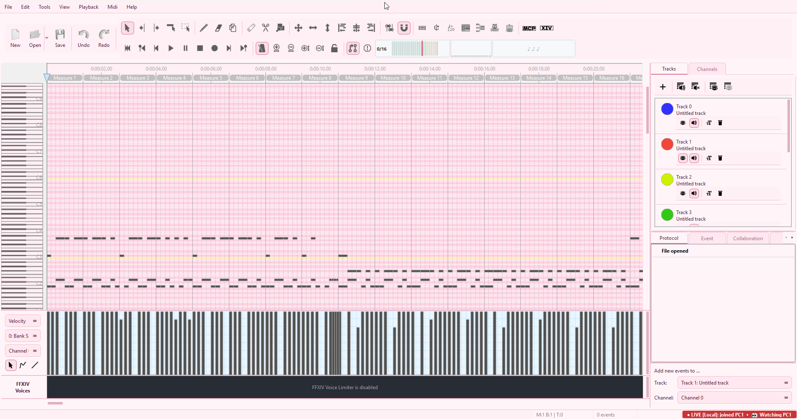
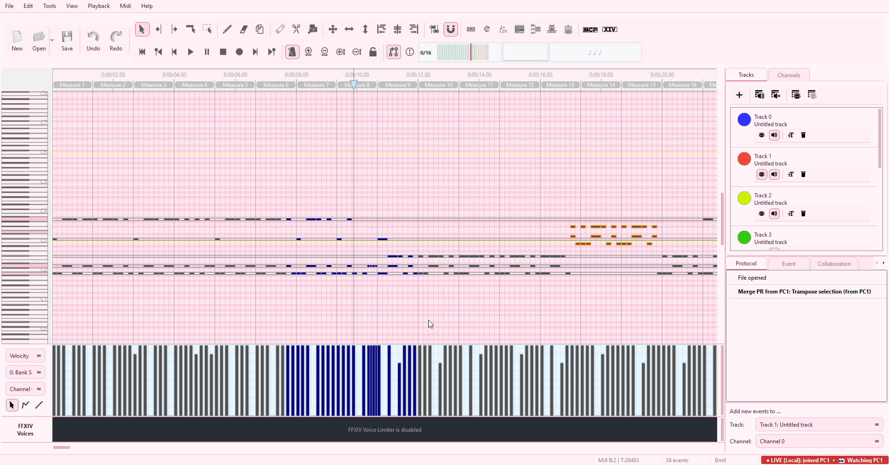
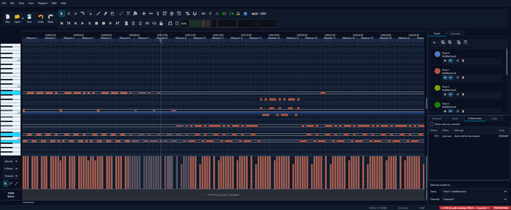
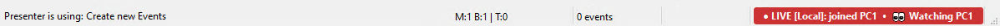
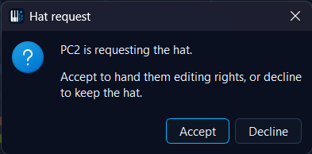
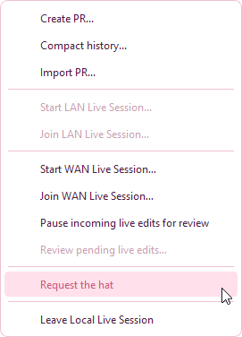
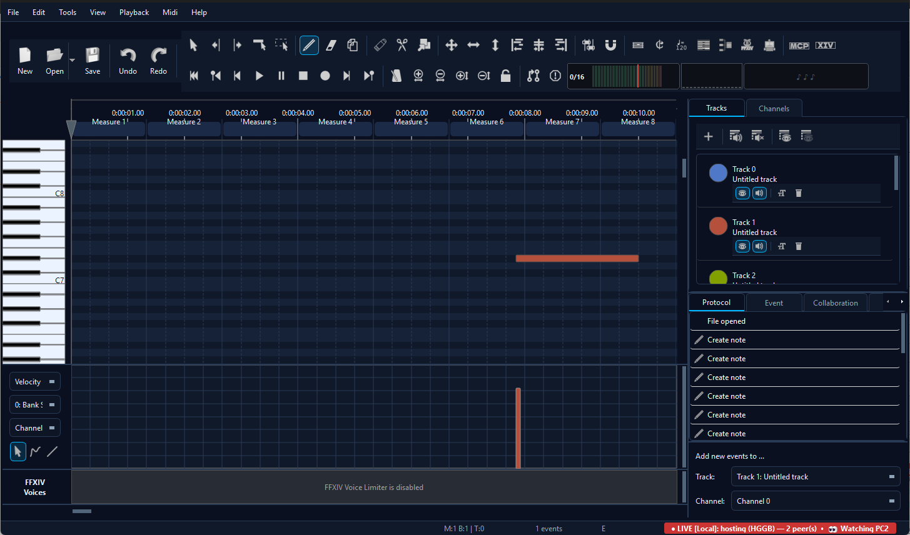
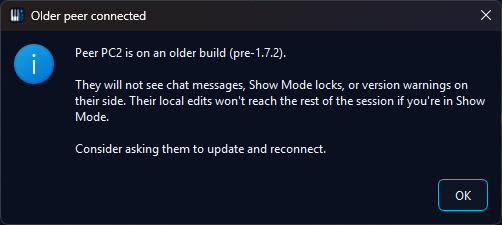

🎩 Show Mode
Show Mode turns any LAN or WAN Live Session into a presentation session. One peer at a time holds the hat - the right to edit - while every other peer watches in real time. The hat can be passed via an explicit request-and-approve handshake, or reclaimed by the host if the presenter goes silent.
The use cases:
- Tutorial streams - show "how to fix FFXIV channels" in a real editor instead of via a screen-share video; every viewer sees every click in their own editor.
- MIDI code review - a composer walks a friend through a passage; the friend watches without accidentally re-editing the same bar.
- Classroom teaching - the instructor demonstrates a comping pattern, then passes the hat so a student can try while everyone watches.
- AI walkthroughs - one user runs MidiPilot, every viewer sees each tool call land in real time.
Picking the mode at session start
The host chooses Edit or Show mode before the session starts. A small picker dialog appears right after clicking Start LAN Live Session or Start WAN Live Session.

The mode is locked for the lifetime of the session - switching means leaving and restarting. Edit mode is the original free-for-all behaviour; Show mode is the topic of this page.
sessionWelcome handshake. From the
joiner's perspective the only visible difference is the
👁 Watching <name> indicator that appears in the
status bar and the editor going read-only.
Switching modes mid-session
The host can flip the active session between Edit and Show at any time - no need to leave and restart. The Collab menu shows a single toggle action whose text adapts to the current mode:
- In Edit: Switch to Show mode. The host becomes the initial presenter; viewers' locks engage instantly.
- In Show: Switch to Edit mode. The presenter pointer clears; every peer regains editing rights.
Typical use: two peers are co-editing in Edit mode, one wants to briefly demo an idea. The host flips into Show, shows the idea (passing the hat to whoever should present), then flips back to Edit and the session resumes normal co-editing. Only the host can trigger the switch; on non-host peers the menu entry is hidden.
Status indicators - who holds the hat
Every peer's status bar carries a Show-mode indicator while a Show session is active:

🎩 PRESENTING - this peer currently holds the hat and is the only one allowed to edit.

👁 Watching <name> - this peer is a viewer, following the named presenter's edits.
What changes for a viewer
While a peer is a viewer (i.e. not the current presenter), MidiEditor AI disables every edit pathway so accidental input can't diverge their local file from the rest of the session. The lock covers:
- The piano roll - tool-driven mouse press / move / release is suppressed. Scrolling, zooming, and piano-key preview (audio playback of clicked keys) still work.
- The toolbar - every tool icon is greyed out.
- Edit / Tools / Midi menus - greyed out, including their keyboard shortcuts.
- MidiPilot - the input field is disabled with an explanatory placeholder. The chat history stays visible so a viewer can still read a presenter's AI walkthrough.
- MCP server - any
tools/callrequest is rejected with a structured error message. Read-only resources (midi://state,midi://tracks,midi://config) stay reachable for external observers. - Playback / View / Help menus - stay enabled. Space-bar play/pause works locally. When the presenter starts or stops playback, every viewer's player follows the same trigger and seeks to the presenter's cursor position.

A viewer's interface during Show mode. The host's edits land in real time, but local input is locked until the hat is passed.
Follow-the-host - what viewers see
Show Mode is more than just a write lock. Viewers follow the presenter's view in real time: the viewport (scroll + zoom), visibility of tracks and channels, the active editing tool, the edit cursor, and the presenter's selected notes all mirror onto every viewer's editor.

Presenter on the left, viewer on the right. The viewer's matrix fits to the presenter's visible region automatically - if the viewer's window is bigger, they see the same content plus a small margin; if smaller, the viewer zooms in to match.
Specifically synced from the presenter to every viewer:
- Viewport - horizontal scroll position, vertical scroll position, zoom level. Viewers don't just mirror the scroll value 1:1 (which would snap them to the wrong area when window sizes differ) - instead the viewer's matrix recomputes its own scale so the presenter's visible region fits inside the viewer's pixel geometry with ~5 % padding.
- Track visibility - show / hide a track on the presenter and every viewer follows.
- Channel visibility - same for the per-channel visibility toggles.
- Active tool - a transient status-bar tip on every viewer: "Presenter is using: <tool name>".
- Edit cursor - the cursor tick mirrors across, so when the presenter clicks to a position viewers see their own cursor jump too.
- Selection - whichever notes the presenter has selected appear highlighted on every viewer's piano roll. Identity is matched by (tick, channel, line, type) tuple, so divergent local edits never crash the apply - missing matches are silently skipped.
- Playback - the presenter pressing Play or Stop triggers every viewer's local player to start or stop at the presenter's cursor position. Each peer plays through its own audio output (Windows MIDI / FluidSynth / whatever's configured under Settings); if a viewer hasn't picked an output yet, the editor's normal "configure your MIDI output" dialog appears on the first trigger. No clock-sync is attempted, so initial latency (50-200 ms typical) and longer-playback drift are part of the trade-off - good enough for tutorials and demos, not a substitute for shared audio recording.

Tool-name tip on the viewer side. Refreshes every time the host's view-state broadcast lands (max 4 Hz).
Passing the hat
Only the current presenter can transfer the hat. Viewers ask for the hat via an explicit request; the presenter receives a modal prompt and either accepts or declines.
- Viewer: opens the Collaboration menu, clicks Request the hat. The status bar acknowledges: "Hat request sent to the presenter."
- Presenter: receives a modal prompt naming the requester - "Alice is requesting the hat. Accept to hand them editing rights, or decline to keep the hat."
- Presenter clicks Accept: the hat-transfer frame is broadcast to every peer. The new presenter's matrix unlocks; the old presenter's matrix locks; every viewer's status bar updates to "👁 Watching <new name>".
- Presenter clicks Decline: the status bar reports "Hat request from <name> declined." The hat stays with the current presenter.

Incoming hat-request prompt. The presenter sees the requester's display name; the request never auto-grants.
Passing the hat as the presenter
The presenter can also initiate a transfer without waiting for a request - useful when teaching ("now Alice's turn") or demoing ("Bob, show them what you tried"). The Collaboration menu carries a Pass the hat to… entry that lists every currently-connected peer.

Hat-pass actions in the Collab menu. Each entry is context-sensitive - Pass is visible only to the presenter, Request only to viewers, Take only to the host when the presenter is silent (see below).

Picker dialog when the presenter chooses Pass the hat to…. The list updates live - a peer that disconnects between menu-open and click won't appear, and if they disconnect during the click the transfer bounces back with a "peer disconnected" status-bar toast.
Yielding the hat
When the presenter is done and has no specific next presenter in mind, they can use Yield the hat from the Collab menu. This hands the hat back to the host without picking a successor; the host then becomes the presenter and any viewer can request the hat from them as usual. Only available to a non-host presenter (yielding to yourself when you're already the host is a no-op).
Host takeover after silence
If the presenter goes silent - network drop, hard crash, laptop closed - the session would normally be stuck. To prevent that, the host (whoever started the session) gets a special Take the hat menu entry that becomes active once the presenter has been absent past the heartbeat deadline (~30 seconds).
hatTransferred frame with the takeover reason from a
remote peer - only the host's own local code path is allowed
to escalate.
Joining with an older version
If a peer on an older build joins the session, the wire protocol degrades gracefully but the older peer misses the UI affordances - they don't see the locks, the indicators, or the hat-pass menus. Their local edits never reach the rest of the session because the host's hunk validator drops anything that isn't from the current presenter; the net effect is one peer running a divergent local copy they can't share, which is confusing.
Mismatches are detected automatically and surfaced on every peer that knows how to look:
- Host detects an older joiner: a modal popup names the peer and explains what they won't see. The host can then ask them to update and reconnect.
- Joiner detects an older host: the symmetric modal popup, triggered by the absence of the host's session-welcome handshake.
- Both peers on builds that differ but are wire-compatible: a low-key status-bar tip on both sides. No modal - the indicators, locks, and hat-pass menus all work.

"Blind generation" warning. The older peer can't see any warning on their side, so the local user is the only one who can act - hence the modal acknowledgement.
How is Show Mode different from Review Mode?
Review Mode lets the host approve each incoming edit before it lands. It might sound similar to Show Mode - both are about controlling what gets applied - but the intent is different:
- Review Mode: anyone can edit, the host approves before applying. Edits pile up in a queue; the host cherry-picks. Useful for trust-asymmetric collaboration ("my AI agent is editing, I want to vet"). Good when there are simultaneous editors.
- Show Mode: only the presenter can edit, viewers can't even attempt. No queue, no approval - just a one-way stream. Useful for zero-noise demonstrations.
See also
- LAN Live Session - the underlying same-network transport that hosts Show sessions inside your LAN.
- WAN Live Session - the WebRTC transport for Show sessions across the internet.
- Chat side-channel - the in-session text chat panel. Works in both Edit and Show modes; viewers in Show mode can chat even though they can't edit MIDI - that's the whole point.
- Collaboration settings - ICE / rendezvous / heartbeat thresholds.